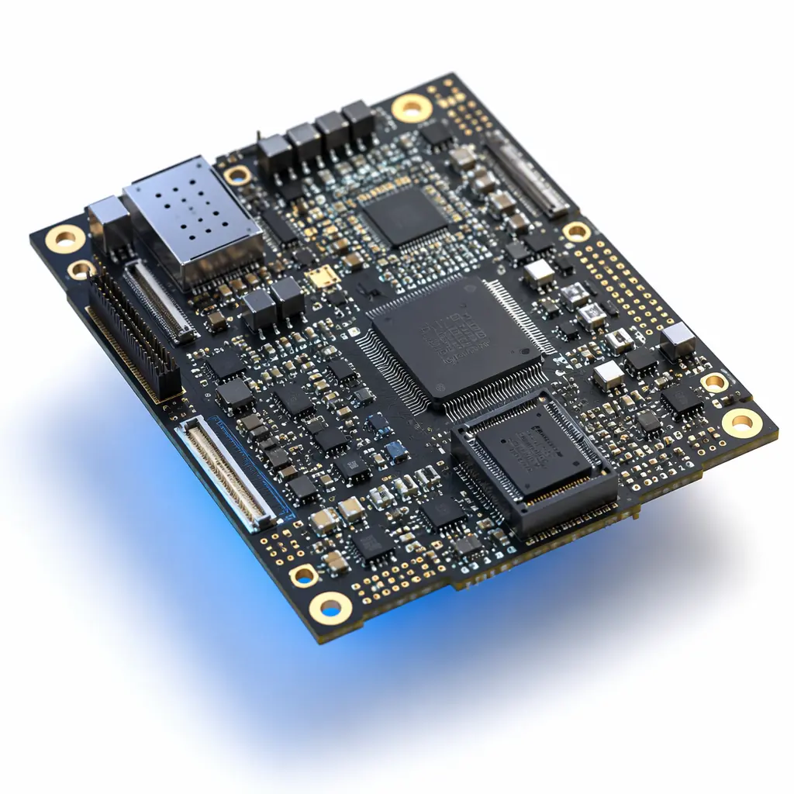
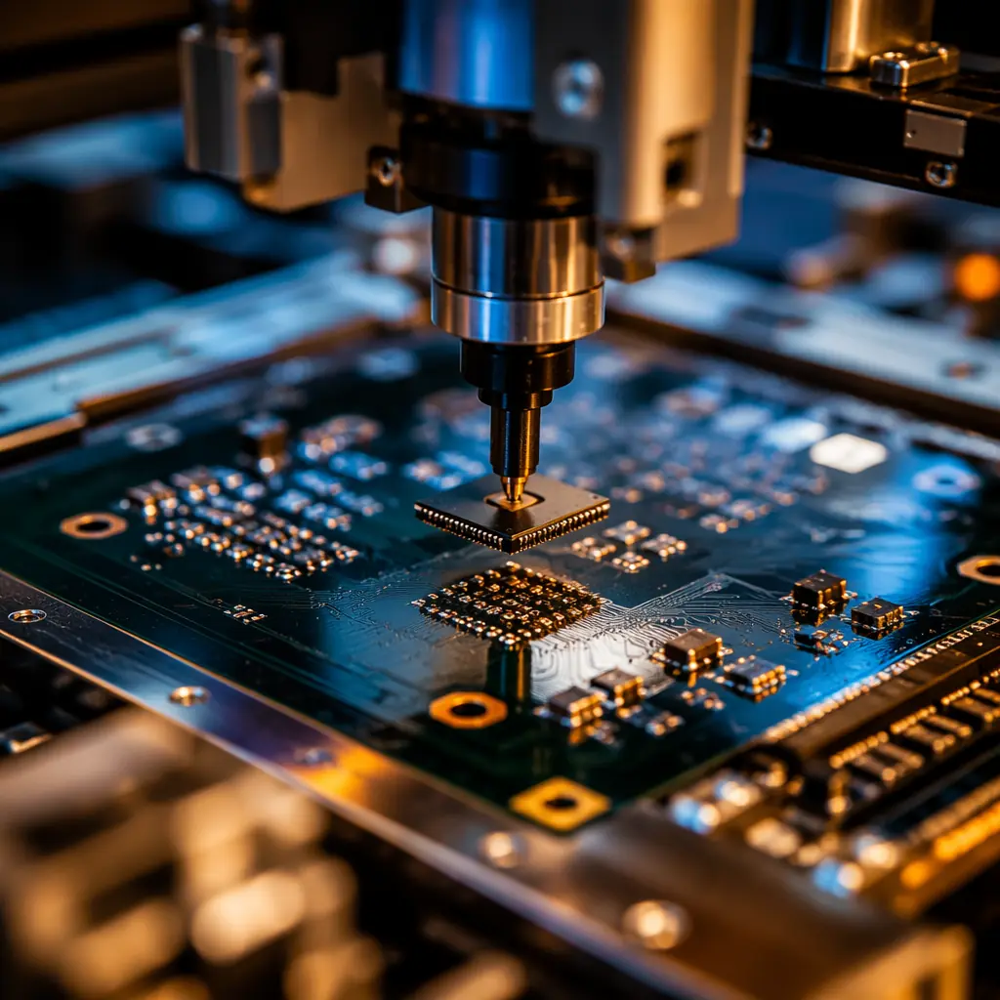
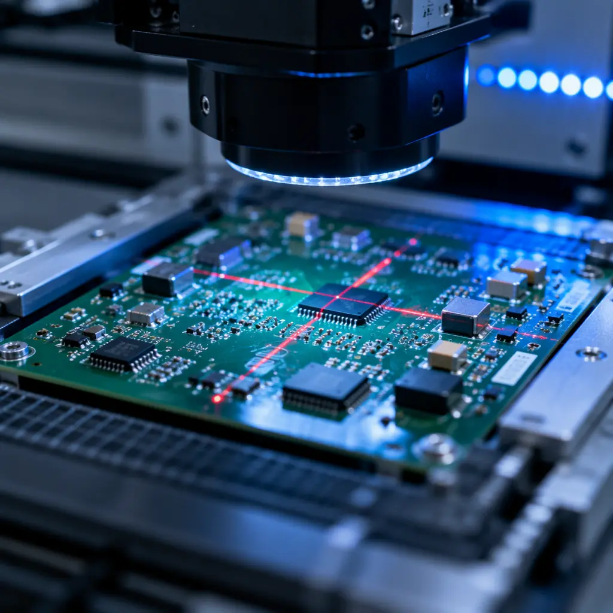

Every hardware startup hits the same wall: you need 200 assembled boards to fulfill first-customer orders, but every PCBA vendor you contact quotes minimum order quantities of 1,000-plus units. The ones that don't quote MOQ bake the penalty into your per-unit price — suddenly your $12 board costs $38. Low-volume PCB assembly is not a market failure. It is a negotiation and procurement problem with a well-defined solution set, and the startups that crack it gain a 6-12 month speed advantage over competitors who wait until they can "afford" volume pricing.
This guide is built from the factory side of the table. At Huaxing PCBA, we run 8 SMT lines across our Shenzhen facility and roughly 40% of our assembly orders are in the 50-500 unit range — startups, university labs, industrial IoT companies, and medical device developers who need production quality without production minimums. Every strategy below reflects what actually works in our production scheduling meetings, not procurement theory.

Why MOQ Exists — And Why It Should Not Scare You
Before you can negotiate MOQ, you need to understand what drives it. Factories impose minimum order quantities for three legitimate reasons — and once you address each one, the MOQ conversation changes from "no" to "here's how we can make it work."
Setup and Changeover Time Dominates Small Runs
Loading a feeder rack, programming the pick-and-place machine, and running first-article inspection takes the same 45-90 minutes whether you are building 50 boards or 5,000. On a 50-unit order, that setup cost amortizes across far fewer units. Smart factories handle this by batching similar orders on the same line setup — your 50-unit run might piggyback on another customer's FR-4 4-layer job that uses overlapping components. Ask your vendor explicitly: "Can you batch our order with similar builds to share setup overhead?" The best factories already plan for this; the mediocre ones will blink. For more on how production planning affects your cost, see our PCB cost factors breakdown.
Component Procurement at Low Quantities Is Expensive
When you order 200 units of assembly, you are effectively asking the factory to buy 200-plus-attrition quantities of every BOM line item. Distributors like Digi-Key and Mouser charge premium prices at low volumes, and some specialized ICs have factory-imposed minimum order quantities of 500-2,500 pieces. The solution is component consolidation: design your BOM so that multiple products share the same passives, connectors, and voltage regulators. A factory that sees 10,000 shared 100nF capacitors across three customer orders can buy a single reel and allocate across all three — dramatically lowering your allocated component cost.
Stencil and Tooling NRE Gets Front-Loaded
A laser-cut stainless steel stencil costs $80-250, programming and fixture setup adds $150-400, and if your design needs a custom solder pallet or wave-solder fixture, that is another $300-800. On a 5,000-unit order these NRE costs are negligible per unit. On a 100-unit order, they can double your per-board cost. The procurement lever here is NRE amortization agreements: negotiate that the factory amortizes NRE across your first three production runs instead of charging it all upfront. Our PCB quote comparison guide covers NRE line items in detail so you know exactly what you should and should not pay.
Key Takeaway: MOQ is not a hard wall. It is a pricing signal that the factory's default process is not optimized for your order profile. Reframe the conversation around batching, shared component procurement, and NRE amortization — and at least half of factories will re-quote at a viable price.
Panel Sharing: The Single Biggest Cost Lever for Low-Volume Assembly
Panel sharing — also called "pooled panel" or "shared panel" manufacturing — is the practice of placing multiple customers' PCB designs on a single production panel. Instead of your 50 boards occupying an entire panel (wasting 60% of the area), your design shares space with other small-run jobs. The PCB fabrication cost per unit drops dramatically because you pay only for the panel area you actually use.

Standard Thickness and Material = Panel Pool Access
Most panel-sharing pools run standard 1.6mm FR-4 with HASL or ENIG finish. If your design uses 1.6mm FR-4, you can typically join a shared panel immediately. If you need 2.0mm or 1.0mm thickness, or exotic materials like Rogers or polyimide, you fall out of the pool and pay for a dedicated panel. Before finalizing your stackup, ask your PCBA partner: "What panel pool configurations do you run weekly?" and design into those specs if possible. For high-frequency or specialty designs, this tradeoff may not be acceptable — but for 80% of commercial and industrial boards, standard FR-4 at 1.6mm works perfectly. Our panelization cost optimization guide walks through the math.
Array Design Affects Panel Yield
Your board outline, routing tabs, and fiducial placement determine how efficiently your design nests on a shared panel. A 45mm x 70mm board with clean rectangular outline nests far better than a 52mm x 68mm L-shaped board with internal cutouts. During DFM review, ask your factory to run a panel yield simulation — the difference between 85% and 94% panel utilization on a shared panel directly translates to your per-unit fabrication cost. Our DFM design guide covers panelization-friendly layout decisions that cost nothing to implement during design but save significant money during production.
Panel Sharing Extends to Assembly Tooling
When multiple small-run boards share a panel, they also share the stencil, the pick-and-place program, and the reflow profile. You are not paying for a dedicated stencil or a dedicated line setup — those costs divide across every design on the panel. The factory's incentive is aligned with yours: the more designs they can fit on one panel, the higher their line utilization. Ask if your vendor runs "family panels" where all designs share the same component reel setup. If so, your small-batch assembly cost approaches volume-tier pricing even at 100 units.
Procurement Tip: When requesting a low-volume quote, always ask: "Is there a shared panel pool I can join, and what are the standard specs?" This single question signals that you understand factory economics and typically unlocks a 30-50% cost reduction versus the default dedicated-panel quote.
Minimum Order Value vs. MOQ: The Distinction That Saves Thousands
Most procurement managers conflate minimum order quantity (MOQ) with minimum order value (MOV), but they are different concepts with different negotiation strategies. MOQ means "we will not build fewer than X units." MOV means "we need at least $Y in revenue to make the line setup worthwhile." The difference matters because you can meet MOV without meeting MOQ — and that is where the smart deals happen.
MOV Is Negotiable; Pure MOQ Is Rarely Genuine
When a factory says "MOQ 500 units," what they often mean is "our minimum order value is approximately 500 units' worth of revenue at our standard per-unit pricing." If your board is a $3 simple 2-layer assembly, 500 units is $1,500. But if your board is a complex 8-layer HDI design at $45/unit, 100 units hits $4,500 — well above their MOV threshold. Always ask what the dollar-value minimum is, not just the unit minimum. A factory that quotes "MOQ 500" at $3/board may happily accept 150 units of a $12/board assembly because the revenue is higher. For guidance on total project budgeting, our PCB cost factors guide breaks down every line item.
Combine Fabrication and Assembly for MOV Leverage
If your bare PCB fabrication order and your PCBA assembly order go to the same factory, the combined invoice value is what matters. A $400 bare PCB order plus a $1,200 assembly order equals $1,600 — and most turnkey PCB assembly factories consider the combined value for MOV purposes. This is one reason turnkey procurement (fabrication + assembly + component sourcing from one vendor) often unlocks better terms for low-volume buyers than splitting fabrication and assembly across two suppliers. See our turnkey PCB assembly guide for the full economics.
Commitment-Based Pricing: Promise Volume, Take Delivery in Batches
One of the most effective low-volume procurement strategies is the batch-delivery commitment. You forecast 2,500 units over 12 months but request delivery in five batches of 500. The factory prices at the 2,500-unit tier (lower per-unit cost), amortizes NRE across the full quantity, and you maintain low inventory risk. This requires trust and a written framework agreement, but it is standard practice in industrial and medical device supply chains. The factory's risk is that you cancel after batch two — mitigate this with a non-cancellable deposit on the first 2-3 batches, which many startups fund through their initial production budget.
| Scenario | Order Qty | Unit Price | NRE / Unit | Total / Unit | Total Order Cost |
|---|---|---|---|---|---|
| Standard quote — MOQ 1,000 | 1,000 | $8.20 | $0.45 | $8.65 | $8,650 |
| Low-volume quote — 200 units | 200 | $14.50 | $2.85 | $17.35 | $3,470 |
| Panel sharing — 200 units | 200 | $9.80 | $1.40 | $11.20 | $2,240 |
| Batch commitment — 200 x 5 batches | 200/batch | $9.20 | $0.25 | $9.45 | $1,890/batch |
| Turnkey with shared panel — 200 units | 200 | $8.90 | $1.10 | $10.00 | $2,000 |
Key Takeaway: The gap between the standard MOQ quote ($8.65/unit) and the smart low-volume procurement price ($10.00/unit via turnkey with panel sharing) is only 15.6%. You are not paying an MOQ penalty — you are paying a small premium for inventory flexibility. That premium is almost always cheaper than the cost of capital tied up in 800 excess boards you do not need yet.
From Prototype to Production: The Quick-Turn Bridge Strategy
One of the most common failure modes for hardware startups is the gap between prototype validation and first production run. You built five boards for $250 each at a prototype house, the design works, and now you need 200 units — but the prototype vendor cannot scale and the production vendors will not touch sub-500 quantities. The bridge strategy closes this gap.
Use the Same Factory for Prototype and Low-Volume Production
When you prototype at one factory and then move to a different factory for production, you pay NRE twice, rebuild stencils, reprogram pick-and-place files, and redo first-article inspection. If you instead prototype at a facility that also handles 50-500 unit production, the prototype stencil, fixture, and placement program roll forward directly. The savings are typically $500-1,200 in duplicated setup costs. More importantly, any DFM issues discovered during the prototype run are already documented in the factory's process files — the production line does not need to rediscover them. Our prototype vs. production comparison covers the workflow differences in detail.
Quick-Turn Prototyping Validates the Supply Chain
A quick-turn PCB run of 5-10 boards does more than validate your design — it validates your BOM availability. If a 10-week-lead-time IC slips to 26 weeks between prototype and production, you want to know that before you commit to 200 units. Quick-turn prototyping with the same factory that will handle production means their procurement team flags long-lead-time components early, giving you time to identify alternates or redesign. For startups, this single benefit often justifies the entire quick-turn prototyping cost.
Pilot Build: The 50-Unit Validation Run
Between a 5-board prototype and a 500-unit production order, insert a 50-unit pilot build. At 50 units, you get real process data — solder joint quality distribution, first-pass yield, component placement accuracy across the full panel — without committing to a full production quantity. A 50-unit pilot run at panel-sharing pricing typically costs $500-1,500 depending on complexity, and it de-risks the next 500 units. Factories that understand the startup journey will treat the pilot build as an engineering run, not a commercial order, and may waive or reduce NRE for the subsequent production batch. Our PCB assembly process guide details what happens at each stage of a production run.

Quality Assurance for Small Batches: No Compromises
The fear that low-volume means low-quality is pervasive — and sometimes justified. A factory running 50 boards on an otherwise-idle line may cut corners on inspection to keep the job profitable. But quality assurance for small batches is a process design problem, not an inherent limitation. Here is what to demand and how to verify it.
AOI Must Be Non-Negotiable — Even at 50 Units
Automated Optical Inspection (AOI) should run on every board, regardless of batch size. The argument that "AOI setup takes longer than the run" is a factory problem, not your problem. Modern AOI systems can load inspection programs from the pick-and-place data in under 5 minutes. If your vendor pushes back on AOI for runs under 200 units, find a different vendor. Our PCB testing methods overview covers AOI, X-ray, ICT, and functional test options for different batch sizes and complexity levels.
First-Article Inspection Report: Your Production Passport
A proper first-article inspection (FAI) for a small batch should include: dimensional verification against Gerber data, solder paste inspection (SPI) data for the first board off the line, component polarity and orientation check, and at least one cross-section for any via-in-pad or via-on-pad designs. Request the FAI report as a deliverable — it costs the factory 15-30 minutes of engineering time and gives you documented evidence that the process ran correctly. If issues appear later, the FAI report is your baseline. For certification-level quality requirements, see our IPC Class 2 vs Class 3 comparison and incoming quality inspection guide.
Statistical Sampling Works for Small Batches
At 50-200 units, 100% functional testing is often practical and economical — just test every board. At 200-500 units, move to AQL-based sampling (AQL 0.65 is standard for electronics; AQL 0.40 for medical or aerospace). The key: your sampling plan must be documented and the factory must agree to rework or scrap any lot that fails the acceptance threshold. Do not accept "we visually checked them" as a quality claim. Demand the sampling plan, the acceptance criteria, and the results report.
Certifications Matter More at Low Volume
When a factory runs 50,000 units/month, process discipline is enforced by volume economics — a 2% defect rate means 1,000 angry customer calls. At 200 units, there is less economic pressure to maintain quality systems. This is why certifications — ISO 9001, IATF 16949, UL, and IPC standards compliance — matter more for low-volume buyers. They are your proxy for process discipline when volume economics do not enforce it. Verify certifications, do not just read them on a website. Our PCB certifications compliance guide explains what each certification actually requires and how to verify it. For supplier evaluation, our PCB supplier audit framework provides a structured checklist.
Quality Checklist for Low-Volume Orders: (1) AOI on every board, (2) SPI data for first board, (3) FAI report as a deliverable, (4) documented sampling plan with AQL thresholds, (5) cross-section analysis for any via-in-pad designs, (6) current certifications verified against issuing body databases. If your vendor cannot provide all six, you are accepting quality risk that a different vendor can eliminate.
Advice for Hardware Startups: The First Production Run Playbook
Having worked with dozens of hardware startups through their first production runs, we have seen the same patterns repeat. The startups that succeed at low-volume procurement follow a consistent playbook. The ones that struggle make the same five mistakes. Here is the playbook.
Send Complete Data on the First Contact
The fastest way to lose a factory's attention as a startup is to send an email that says "How much for 200 units?" with no Gerber files, no BOM, no assembly drawing, and no centroid file. Factories field dozens of speculative RFQs daily; complete data packages get priority treatment. A complete RFQ package for PCBA should include: Gerber files (RS-274X or X2 format), BOM in CSV or Excel with manufacturer part numbers and quantities, centroid/pick-and-place file, assembly drawing or at least a 3D rendering showing component placement, and your target quantity range (e.g., "50-200 initially, scaling to 1,000+"). Our Gerber files guide covers what to include and common mistakes.
Design for the Factory's Existing Capabilities
Every factory has a "sweet spot" — the board complexity, layer count, component pitch, and finish type they run most efficiently. For most Shenzhen PCBA factories, the sweet spot is 2-8 layer FR-4 with 0402 or larger passives, 0.5mm pitch BGAs or coarser, and ENIG or HASL finish. If your startup's design can land inside this sweet spot, you get factory-standard pricing even at low volumes. If you need 0.4mm pitch, 12-layer HDI with blind vias, or exotic materials, you are paying a specialty premium regardless of volume. The design decision that costs nothing during development — choosing 0402 over 0201 passives, for example — can save $3-7 per board in low-volume assembly. Our DFM tips guide covers component selection tradeoffs for cost-optimized assembly.
Budget for 3 Builds, Not 1
The hardware startup that budgets for one production build is planning to fail. Realistically, your first build surfaces DFM issues, your second build validates the fixes, and your third build is the one that ships to customers. Budget for all three — prototype (5-10 units), pilot (50 units), and first production (200-500 units) — as a single procurement program. When you present this to a factory as a three-phase program rather than three separate orders, you get better pricing, guaranteed capacity allocation, and a dedicated engineering contact. The total budget for all three phases at low-volume pricing is typically $8,000-25,000 depending on board complexity — far less than the cost of a delayed product launch or a field failure recall.
Do Not Optimize for the Lowest Per-Unit Price
The most expensive mistake a startup can make is choosing the cheapest vendor for their first production run. Low price at low volume almost always means one of three things: the factory is cutting quality (no AOI, no FAI, no SPI), they are subsidizing your order to win volume business later (and will raise prices on batch two), or they do not understand the actual cost and will come back mid-build asking for more money. Choose a vendor that is transparent about pricing, document everything in a framework agreement, and verify quality systems before you ship a single board. The $2/board you save will not matter when you are reworking 40% of a 200-unit batch.
Build a Relationship, Not a Transaction
The factories that serve hardware startups well are not the ones with the biggest sales teams or the slickest websites. They are the ones where the engineering manager learns your design, the procurement team flags your long-lead-time components proactively, and the production scheduler fits your 200-unit run into a gap between two 5,000-unit jobs. These relationships are built over time — start with a prototype order, meet the engineering team (video call is fine), and treat the factory as a development partner rather than a commodity supplier. The startup that sends five RFQs to five anonymous email addresses and picks the lowest price will never get this relationship. The startup that does a prototype run, provides clear feedback, and commits to a multi-phase program will.
Startup Playbook Summary: Send complete data on first contact. Design into the factory's sweet spot. Budget for prototype + pilot + production as one program. Do not optimize for the lowest per-unit price at low volume. Build a relationship with the engineering team, not the sales department. Startups that follow these five rules typically ship their first production run in 8-12 weeks from Gerber submission. Startups that ignore them spend 16-24 weeks — and significantly more money.
Getting Started: Your Low-Volume PCBA Action Plan
Low-volume PCB assembly at 50-500 units is not a compromise — it is a procurement strategy. Panel sharing, NRE amortization, MOV-based negotiation, and turnkey bundling together reduce your effective per-unit cost to within 15-25% of volume pricing. The startups and SMEs that master these levers do not wait until they "have enough volume" to manufacture — they manufacture early, iterate on real production units, and build supplier relationships that scale with them.
At Huaxing PCBA, low-volume assembly is a core part of our production mix, not an afterthought. Our Shenzhen facility runs shared panel pools weekly, we provide full AOI and FAI documentation on every order regardless of quantity, and our engineering team works directly with startup clients to bridge the gap from prototype validation to production ramp. Our process includes free DFM review before every build and a dedicated procurement contact who flags long-lead-time components before they become schedule risks. Read our turnkey PCBA guide for the full service breakdown, learn how to compare PCBA quotes effectively, or contact our engineering team with your Gerber files and BOM for a same-week project assessment.